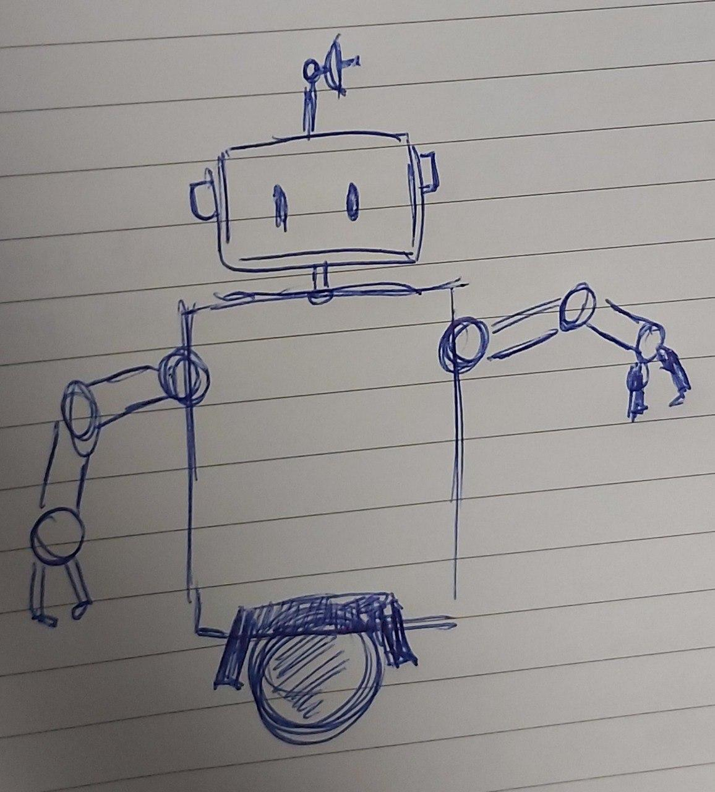

CMU 16-311 Intro to Robotics
Hi, my name is Samuel Leong, and this is my website for HW0, embedded in my actual personal website.
My Personal Website
When I think of a robot...

Drawn by myself, inspired by the CMU ball bot
Sensing
Robot is equipped with cameras as visual eyes, as well as microphones as ears to detect the sounds around it. It has a GPS for localisation, as well as a RADAR sensor on top of its head for odometry in all conditions. It's motors are equipped with passive feedback touch sensors, so that it knows when it bangs into something, and the force with which it moves. It also has a gyroscope for balance.Planning
Planning is done in the CPU in the center of its body. It would use a state-of-the-art SLAM algorithms (possibly developed at CMU) to localise itself in an unknown environment (and map it), using the various sensors described above.Acting
The robot's single ball motor allows it to move, and it also has arms that it can use to pick things up, or get things out of it's way. 3 stabilising legs are available for it when it needs to be stationary.Favourite Real Robot
It's most recent research article was especially interesting. The quadreped robot is now able to walk across any terrain without any external sensors like gyroscopes or cameras, and relying only on the feedback of the motors in the legs.Oops.
This website will not work without JavaScript enabled.
Please enable JavaScript in your browser.